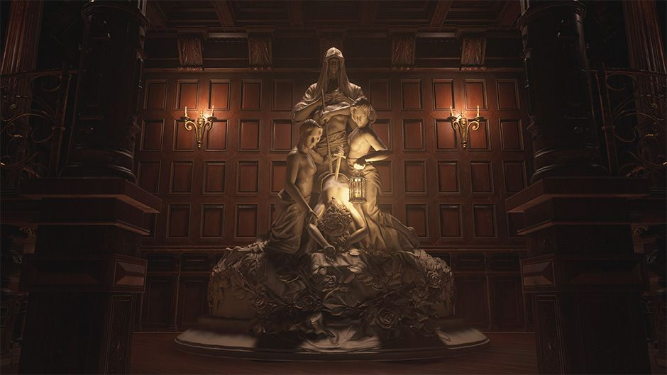

| Alcina Dimitrescu | |
|---|---|
| Sexe | Femme |
| Taille | Moins de 290 cm |
| Profession | Comtesse |
| Date de naissance | Avant 1914 |
| Date de décès | 9 Février 2021 |
| Lieu du décès | Château Dimitrescu |
Alcina Dimitrescu est une comtesse humaine mutante et supposément la matriarche de la famille Dimitrescu. Résidante d'un pays d'Europe de l'Est, elle a hérité du château Dimitrescu, une forteresse contrôlée par la famille depuis sa création au Moyen Âge. Pendant au moins soixante-dix ans entre les années 1950 et 2020, elle est liée à une série d'homicides violents. Dimitrescu est connue pour vivre avec trois femmes qu'elle considère comme ses filles.
Les origines d'Alcina sont actuellement un mystère, notamment son âge, et si elle est née avec une maladie Progenitor ou si elle l'a contractée plus tard. Comme beaucoup d'autres dans la région, Dimitrescu était un adepte d'un culte de sorcière satanique qui pratiquait le vampirisme et le sacrifice humain, peut-être pour se nourrir. Elle se livrait déjà régulièrement au vampirisme dans les années 1950 et avait transformé avec succès trois femmes en 1958, l'une d'entre elles étant Daniela. La famille Dimitrescu était étroitement associée aux familles nobles Beneviento, Moreau et Heisenberg, et maintenait une alliance avec elles pour contrôler la région. Ce contrôle a permis à la famille Dimitrescu de diriger leur château avec une cruauté barbare, prenant régulièrement du nouveau personnel pour remplacer ceux qui étaient emmenés dans le donjon pour y être tués. Le sang de leurs victimes est utilisé pour créer un vin rouge enrichi appelé Sanguis Virginis (latin pour "Sang de Vierge"). Elle fera plus tard la connaissance de Miranda qui lui implanta un Cadou, la transformant en une mutante avec de grandes capaités de régénération, en plus d'interrompre son vieillissement, conservant son apparence perpétuellement. Malgré ces changements biologiques impressionnants, la porphyrie n'a fait qu'empirer et Dimitrescu avait besoin d'un approvisionnement prêt de sang humain frais pour maintenir sa santé. Elle a donc été considérée comme un échec par Miranda.
Parmi les traits d'Alcina après infection, on retrouve la capacité d'allonger ses ongles en griffes acérées comme des rasoirs.
Source : Resident Evil Fandom
Site officiel Resident Evil Village